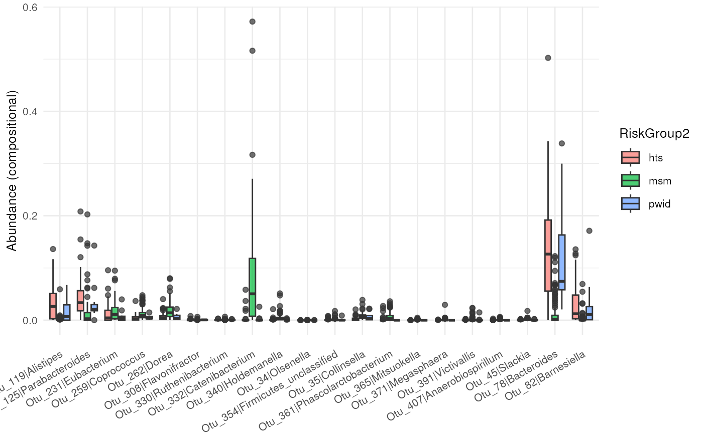
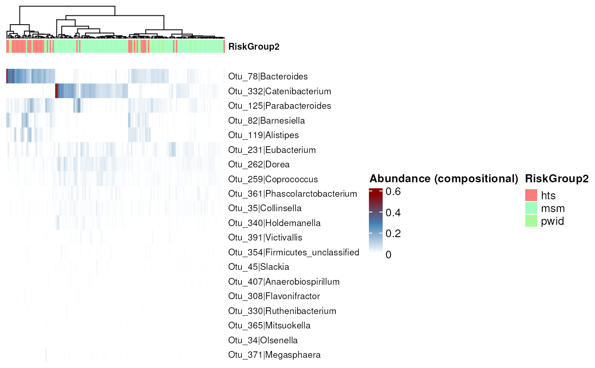
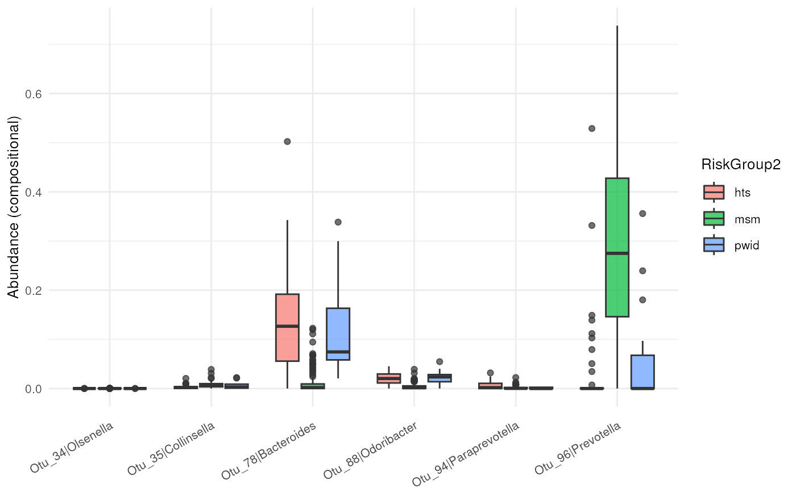
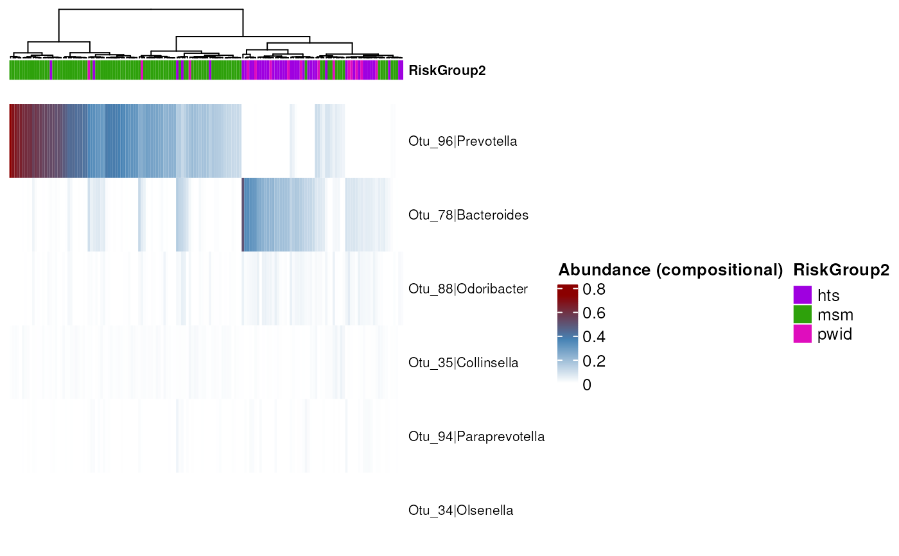

Abundance boxplot
Usage
abundance_plt(
rec,
taxa_ids = NULL,
type = "boxplot",
transform = "compositional",
scale = 1,
top_n = 20
)
# S4 method for recipe
abundance_plt(
rec,
taxa_ids = NULL,
type = "boxplot",
transform = "compositional",
scale = 1,
top_n = 20
)
# S4 method for prep_recipe
abundance_plt(
rec,
taxa_ids = NULL,
type = "boxplot",
transform = "compositional",
scale = 1,
top_n = 20
)Arguments
- rec
A recipe or recipe step.
- taxa_ids
Character vector with taxa_ids to plot. If taxa_ids is NULL the significant characteristics present in all of the executed methods will be plotted.
- type
Character vector indicating the type of the result. Options: c("boxoplot", "heatmap").
- transform
Transformation to apply. The options include: 'compositional' (ie relative abundance), 'Z', 'log10', 'log10p', 'hellinger', 'identity', 'clr', 'alr', or any method from the vegan::decostand function. If the value is NULL, no normalization is applied and works with the raw counts.
- scale
Scaling constant for the abundance values when transform = "scale".
- top_n
Maximum number of taxa to represent. Default: 20.
Examples
data(test_prep_rec)
## Running the function returns a boxplot,
abundance_plt(test_prep_rec)
#> ! Taxa present in all methods are greater than the cutoff top_n = 20
#> ℹ The top 20 significant taxa with the greatest overlap between methods will be used

## Giving the value "heatmap" to the type parameter, the resulting graph
## a heatmap.
abundance_plt(test_prep_rec, type = "heatmap")
#> ! Taxa present in all methods are greater than the cutoff top_n = 20
#> ℹ The top 20 significant taxa with the greatest overlap between methods will be used

## By default, those taxa significant in all methods are plotted. If you want
## to graph some determined features, you can pass them as vector through the
## taxa_ids parameter.
taxa_ids <- c("Otu_96", "Otu_78", "Otu_88", "Otu_35", "Otu_94", "Otu_34")
abundance_plt(test_prep_rec, taxa_ids = taxa_ids)

abundance_plt(test_prep_rec, taxa_ids = taxa_ids, type = "heatmap")

## abundance_plt function needs a prep-recipe. If you pass a a non-prep
## recipe the output is an error.
data(test_rec)
if (FALSE) df <- abundance_plt(test_rec)